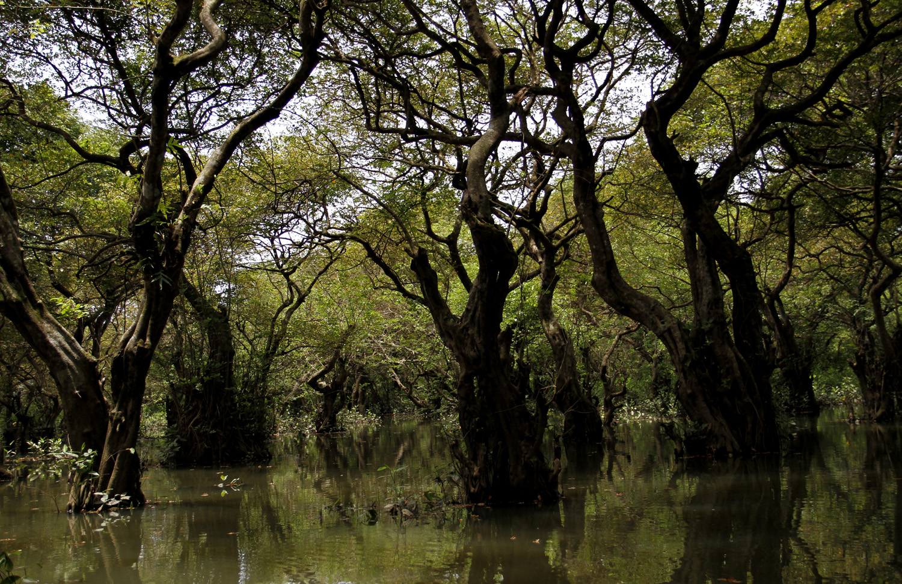
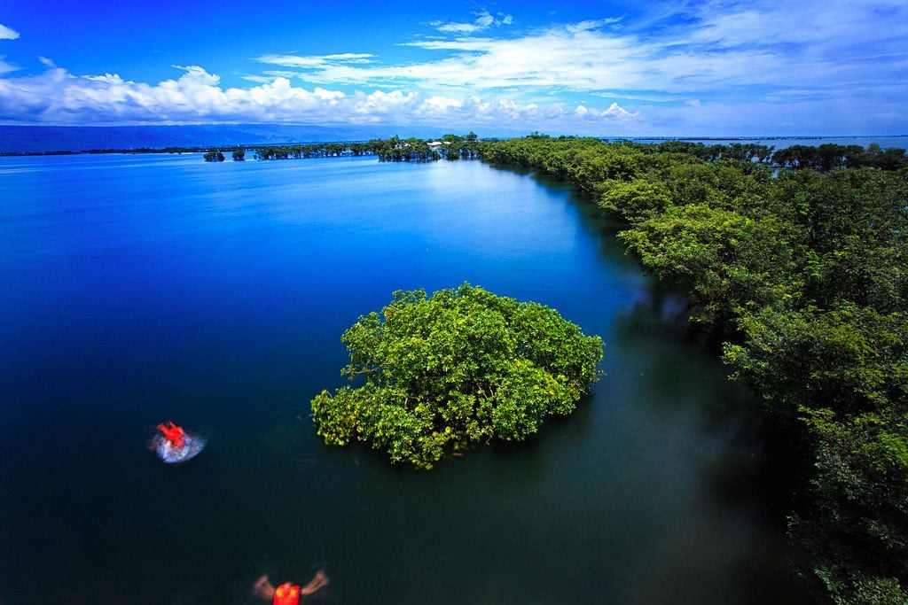
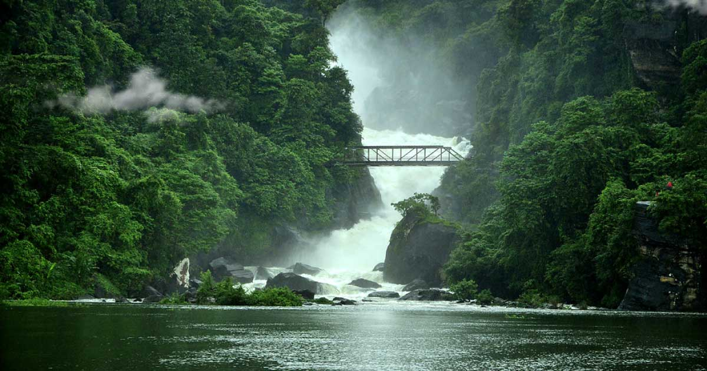
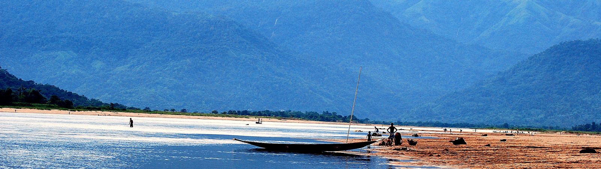
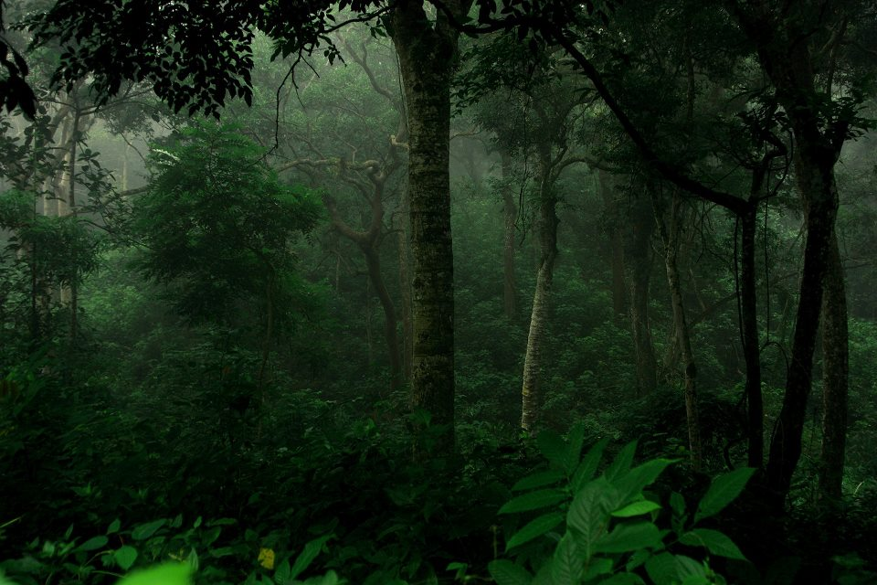
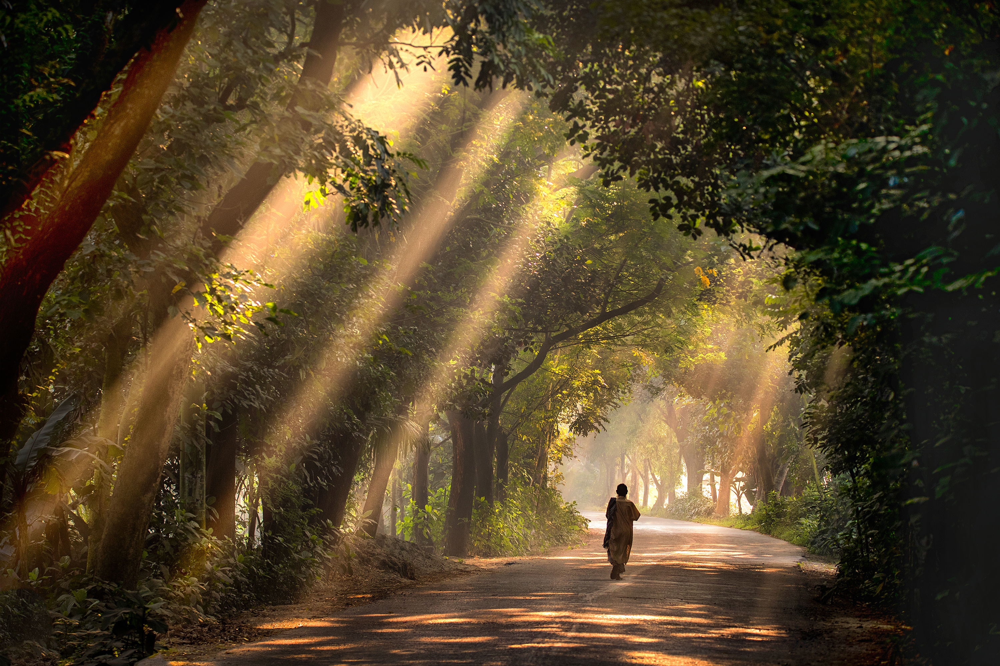

1. RATARGUL
Ratargul Swamp Forest is a freshwater swamp forest located in Gowain River, Fatehpur Union, Gowainghat, Sylhet, Bangladesh. It is the only swamp forest located in Bangladesh and one of the few freshwater swamp forests in the world. The forest is naturally conserved under the Department of Forestry, Government of Bangladesh. Its area is 3, 325.61 acre including 504 acre declared as the animal sanctuary in 2015. It is known as the Sundarbans of Sylhet. This only swamp forest in Bangladesh is located 26 kilometres (16 mi) far from Sylhet. The forest's name comes from the word, "Rata" or "Pati" tree, used by the locals of Sylhet. The evergreen forest is situated by the river Goain and linked with the channel Chengir Khal. Most of the trees growing here are the Dalbergia reniformis (করচ গাছ Koroch tree). The forest is submerged under 20–30 feet water in the rainy season. For the rest of the year, the water level is about 10 feet deep.[2][3][4] Ratargul is known as “Sundarban of Sulhet” Ratargul is about 26 kilometres from Sylhet. There is a 3,325 acres wetland in Sylhet range-2 under the forest department and in that wetland Ratargul swamp forest is about 504 acres[5] It is located in Gowainghat. After reaching Gowainghat, tourists reserve local engine boat namely "traller" to reach forest.[6] There are two haors, Shimul Bil haor and Neoa Bil Haor, in the south part of the forest. Tropical air from the north-west of Sylhet causes heavy rainfall. According to Sylhet Weather Centre, average rainfall is 4162 millimetre per year. Highest rainfall occurs in July which is 1250 millimetre. On the other hand, December is the driest season with 74% relative density which jumps up to more than 90% in July–August. Snake and worm snake can widely be seen in this water-drowned forest. Mongoose can be seen in dry season. Monkey and Water Monitor also resides in the forest. Heron, Egret, Kingfisher, Parrot, Bulbul, Swan, Dove, Water fowl, Eagle and Kite Bird are some of the birds of the swamp forest. Cotton Pygmy Goose and other Migratory birds and Vulture visit the forest in winter. Name of some local fishes available in the forest are Batasio, Rita, Pabda, Rohu etc.
2. LALAKHAL
Lalakhal (Bengali: লালাখাল) is a tourist spot in Jaintiapur, Sylhet District, Bangladesh. Lalakhal is a wide channel in the Sharee River near the Tamabil road. The river is not very deep and is one of the sources of sand in Sylhet. The focal point of the feature is the variety of colours of the water, which varies from blue to green to clear at different points. Lalakhal,which is another top tourist attraction in Jaintapur Upazilla, is covered with hills, natural forests, tea gardens, and rivers under the Jainta Hill which comprises part of the Meghalaya Ranges of India. Flowing from the Indian part, the river Myntdu enters Lalakhal as the Saree and meets the river Guaiyan after passing Sarighat. Over a stretch of nearly 12 km of the river from Lalakhal to Sarighat, the colour of the water stays transparent green in winter (as well as in other seasons when it does not rain) due to the minerals flowing with water and the sandy river bed.

3. TANGOAR HAOR
At the foot of the Meghalaya ranges in the middle of Tahirpur and Dharmapasha Upazilla under Sunamgonj district in north-east Sylhet is a vast swampland popularly known as Tangoar Haor that spans over an area of nearly 100 square kilometres. Cascading from the Meghalaya about 30 waterfalls flow into this large water body engendering a charm that is truly rare. In 2000, it was internationally recognised as a Ramseur site. After the Sundarbans, it is the second Ramseur site in Bangladesh. Prior to that, in 1999, the government of Bangladesh earmarked Tangoar Haor as an ecologically critical area. Tanguar haor (Bengali: টাঙ্গুয়ার হাওর; also called Tangua haor), located in the Dharmapasha and Tahirpur upazilas of Sunamganj District in Bangladesh, is a unique wetland ecosystem of national importance and has come into international focus. The area of Tanguar haor including 46 villages within the haor is about 100 square kilometres (39 sq mi) of which 2,802.36 ha2 is wetland. It is the source of livelihood for more than 40,000 people. Bangladesh declared it an Ecologically Critical Area in 1999 considering its critical condition as a result of overexploitation of its natural resources. Every winter the haor is home to about 200 types of migratory birds. In 1999–2000, the government earned 7,073,184 takas as revenue just from fisheries of the haor. There are more than 140 species of fresh water fish in the haor. The more predominant among them are: ayir, Cat fish, baim, tara, gutum, gulsha, tengra, titna, garia, beti, kakia. Gulli, balua, ban tulsi, nalkhagra and other freshwater wetland trees are in this haor.
4. SREEMONGOL
Sreemangal (Bengali: শ্রীমঙ্গল, romanized: Srimongol) is an upazila of Moulvibazar District[1] in the Sylhet Division of Bangladesh. It is located at the southwest of the district, and borders the Habiganj District to the west and the Indian state of Tripura to the south. Sreemangal is often referred to as the 'tea capital' of Bangladesh, and is most famous for its tea fields. Other than tea, the rubber, pineapple, wood, betel, and lemon industries also exist in the upazila. It is said the name Sreemangal (or Srimangal) is named after Sri Das and Mangal Das; two brothers who settled on the banks of the Hail Haor.[3] A copper plate of Raja Marundanath from the 11th century was found in Kalapur. During an excavation at Lamua, an ancient statue of Ananta Narayan was dug out. In 1454, the Nirmai Shiva Bari was built and still stands today. Srimangal thana was established in 1912. The central town later became a pourashava in 1935. In 1963, two peasants were killed by police officers which kicked off the Balishira peasant riots. During the Bangladesh Liberation War of 1971, the Pakistani army reached Srimangal on 30 April setting houses on fire and committing atrocities against women. The East Pakistan Rifles camp and Wapda office premises were among the two mass killing sites. Two mass graves remain in Bharaura with a memorial in North Bharaura. Sreemangal is located at 24.3083°N 91.7333°E. It has 43,952 households and total area 450.74 km2. It is bordered by Moulvibazar Sadar to the north, Tripura to the south, Kamalganj to the east and Chunarughat, Nabiganj and Bahubal to the west.

5. PANTHUMAI
Panthumai – a village from West Jaflong Union under Guainghat Upazilla – is another tourism hub in Sylhet. The village, which is very near to the east Khasia hill of the Meghalaya ranges, boasts of an eye-catching fall popularly known as Borhill Fall. Though the main fall is geographically located in the Indian territory, people can enjoy its enormous splendour head-on. Flowing from the Borhill Fall is a branch of the river Piyain that heads west and leads to Bisnakandi, another major tourist spot.
6. LOVACHORA
Lovachora is a bordering area from Kanaighat Upazilla in the eastern part of Sylhet district, which is somewhat fortified from northeast to northwest by the Meghalayan ranges. It is essentially a quarry where stones and boulders are mined, besides an age-old tea garden.

7. BISNAKHANDI
Bichnakandi (Bengali: বিছানাকান্দি, romanized: Bichhanakandi), also known as Bisnakandi, is a village in Rustompur Union, Gowainghat Upazila of Bangladesh's Sylhet District.[1][2] In recent years, there has been an influx of tourists to its river. Bichnakandi is made up of two words in the Bengali language; Bichhana (or Bisna in Sylheti) meaning bed and kandi meaning a dam or cluster. The abundance of stones piled on top of each other like a bed gives this name. Bichnakandi is a quarry spot that is used to collect rocks from the riverbed.[4] It is the place where many layers of the Khasi mountains from both sides meet at one point. Fountains from the Khasi Hills make a lake that is connected to Piyain River. The rocks are also natural and come down with water streams from the mountains. It is one of the most visited tourist spots in Bangladesh.[citation needed] This place is alongside Bangladesh-India border and has two tectonic plates on the verge of colliding.[citation needed] Geologist also have proved that these kinds of places in Earth have a high rate of earthquakes. Same can be told for Jaflong, Lalakhal, Manipur, and San Andreas Fault.
.jpg)
8. JAFLONG
Jaflong (Bengali: জাফলং) is a hill station and tourist destination in the Division of Sylhet, Bangladesh. It is located in Gowainghat Upazila of Sylhet District and situated at the border between Bangladesh and the Indian state of Meghalaya, overshadowed by subtropical mountains and rainforests. It is known for its stone collections and is home of the Khasi tribe. n early 2005, Laskar Muqsudur Rahman, Deputy Conservator of Forests, Sylhet Forest Division, observed that Jaflong that he heard in his boyhood as the 'lungs' of Greater Sylhet was at stake due to on going encroachments and establishment of unauthorized stone crushing mills. He took initiatives to recover the land and establish a recreation-cum-botanical park named as 'Jaflong Green Park'. The first foundation stone for the thematic Green Park at Jaflong was laid by Laskar Muqsudur Rahman, Deputy Conservator of Forests in 2005 with the cooperation of local forest staffs led by Forest Ranger Mohammad Ali. Nonetheless, at the inception it was a challenging task due to local conflicts and procedural constraints. The forestation program in Jaflong Green Park has been started under supervision of the joint forces, Jaflong Foundation and Forest Department. They have jointly taken up the forestation program with about 100 hectares of grabbed land. Under the forestation program, various types of trees, including hybrid Akash-moni, are being planted in the park to maintain ecological balance.

9. JADUKATA
Bangladesh is crisscrossed by rivers, and beautiful rivers are always an attraction for tourists. The Jadukata – one of the most beautiful rivers in Bangladesh – is situated in Laurergorh under Tahirpur Upazilla in Sunamgonj District. Previously called the Renuka, this river flows from the Meghalaya ranges. The shrine of Hazrat Shah Arefin (R) is situated beside the river. Spectacularly visible behind the shrine (in the rainy season) is a waterfall. On the other side of the river is a beautiful hill popularly known as Bariker Tilla, behind which there is a church. Beside the church is a narrow westward road that leads to the village of the Garo indigenous community. Past the Garo village is the Borochora Stone Quarry and Takerghat.

10. DOLURA
Not far away from Sunamganj town, Dolura is yet another tourist attraction. Kissed by Meghalayan ranges, Dolura is just past the village Narayontola – where indigenous people live. The high hills and the river Cholti flowing from one side together with its sandy banks and crystal clear water attract tourists. The martyrs’ memorial and the cemetery where 48 martyred freedom fighters of 1971 are resting in peace are not to be missed.
11. BHOLAGONJ
Bholagonj, the largest stone quarry in Bangladesh, is 33 km away to the north from Sylhet city. Flowing respectively from the Khasi hill in the north and Dauki in the east, the rivers Dholai and the Piyain meet at Companigonj Upazilla Sadar, which is 27 km away from Sylhet city on the Salutikor-Bholagonj Road. Just six kilometres from there is Bholagonj— a place that boasts of rows of hills, rivers, falls and quarries.

12. LAWACHERA
On the Vanugach-Komalganj Road about seven kilometres from Sreemongol town is the entry to Lauachora National Garden. It is an evergreen rainforest with excessive precipitation. Tall trees with their lofty branches and soaring foliage make for a unique cover for the forest on a sunny day. Lauachora is one of the seven safari parks and 10 national gardens in Bangladesh. An area of 1,250 hectares from the 2,740-hectare West Vanugach Reserve Forest was declared a national garden in 1996.

13. REMA-KALENGA RESERVE FOREST
Rema-Kalenga Wildlife Sanctuary is a protected forest and wildlife sanctuary in Bangladesh. This is a dry and evergreen forest .[1] It is located in the Chunarughat of Habiganj district. Rema-Kalenga Wildlife Sanctuary was established in 1982 and later expanded in 1996. Currently the wildlife sanctuary expands on an area of 1795.54 hectares as of 2009.[2] This is one of the natural forests in Bangladesh that are still in good condition. However, indiscriminate theft of trees & deforestation pose threat on the sanctuary. Rema-Kalenga Wildlife Sanctuary is located in Chunarughat upazila of Habiganj. It is in very near to Srimangal of Moulvibazar district and adjacent to the Tripura border of India. The wildlife sanctuary is about 130 kilometers north-east of the capital Dhaka. It comprises four bits of Kalenga Forest Range of Habiganj District namely: Kalenga, Rema, Chanbari and Rashidpur. Rema-Kalenga wildlife sanctuary is rich in rare species plants & animals. The forest currently has 37 species of mammals, 167 species of birds, seven species of amphibian, 18 species of reptiles and 638 species of plants. Specially, the forest is well known for a variety of rare bird species, like - racket tailed drongo, parrots, Hill Myna, Red Headed Trogon, Red Whiskered Bulbul, White-rumped Vulture, Kalij Pheasant, Red Jungle Fowl, owl, kingfisher, eagle, etc. The three species of monkeys live in are: Kullu, lajjabati Resas monkey and night monkeys. Moreover, there are five species kathabirali. Of rare species in the Malay banei found at the kathabirali only. Among the more significant wildlife mukhapora Hanuman, Hanuman glasses, ulluka, Maya deer, mechobagha, banyasukara, fitch, weasel, hedgehog, etc.. Cobra, paradise flycatcher, damrasa, etc. laudaga with eighteen species of snake in the forest can be found According to the locals, Tigers and Leopards were common back in the 1960s. But since 1971, there has been no certain tiger sightings. However very rare occasional reports of Leopards surface but these are more likely to be stray individuals of bordering Indian forest. Also Dholes or Asiatic Wild Dogs are extinct since 90s. At present different types of small wild cats and jackals are main terrestrial predators of the forest.
14. KHADIMNAGAR RAINFOREST
Jaflong Road. After passing the gate of Shahparan Mazar, if you go 10 km by Jaflong Road from Sylhet city, soon you will find Khadim Choumuhna. Then turning on the right, you will find the starting point of Khadimnagar tea garden. Going ahead, huge tea garden will be seen till the natural forest handling. Khadimnagar Rainforest is located in the middle of six tea gardens combined with 1,673 acres of hills and natural forest. The rain-forest has received the official recognition as a National Park and It is maintained with the assistance of USAID. There are two trails for walking in this forest. One is for walking 45-minutes and another is for a two hours walking. There is a map of these two trails in front of the office of the forest department. Also, you may take a local person as your guide. In the park, you will see various types of known and unknown wild animals like bears, monkeys, squirrels, rabbits, forest cats, oysters etc. You will also find many types of birds here chirping the whole day. Many kinds of trees are also seen in this park. The animals, birds and trees will give you a complete natural flavor to enjoy the natural environment.

15. SATHCHORI NATIONAL FOREST
Sathchori National ForestSathchori National Forest is situated in Roghunandon Hill at Chunnarughat Upazilla under Habiganj District in Sylhet Division. Previously known as Roghunandon Reserve Forest, this national forest partitions Sathchori Tea Garden and Chaklapunji Tea Garden. There are some other tea gardens near the forest which was actually named after seven choras (creeks) flowing from the hills. Sathchori National Forest is mainly an evergreen woodland boasting of almost 200 types of trees including teakwood (tectona grandis), mahogany (swietenia mahagoni) chrysanthemum and bamboo. In addition to a variety of species of apes and deer, 24 species of mammals, 18 species of reptiles and 150 types of birds are found there. There are three trails for trekking. One takes 30 minutes, another one hour and the other three hours to complete trekking. The 30-minute trail takes one to the village of the Tripura indigenous community. The three-hour trail, which is six kilometres long, is ideal for anyone interested in birds and wild animals as well as agar wood (raw material for incense and perfume). There are some well trained guides to take tourists through the forest.
